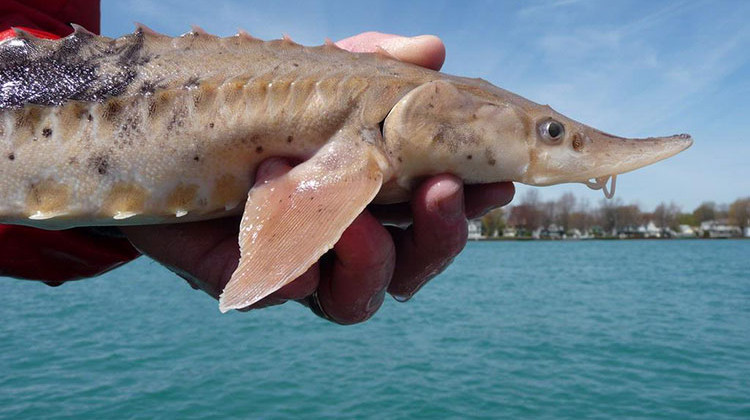

Sobre
Esturjão é o nome comum usado para designar as espécies de peixes da família Acipenseridae, incluindo os gêneros
Acipenser, Huso, Scaphirhynchus e Pseudoscaphirhynchus. O termo inclui mais de 20 espécies que são comumente
conhecidas como esturjões e várias espécies aparentadas que possuem nomes comuns distintos, sendo as mais notáveis
sterlet , kaluga e beluga. Coletivamente, a família é também conhecida como Esturjões Verdadeiros. O termo esturjão é
algumas vezes utilizado mais exclusivamente para designar espécies dos dois gêneros mais conhecidos: Acipenser e Huso.
Os esturjões compõem uma das mais antigas famílias de peixes ósseos existentes, e são nativos de rios e lagos da
Europa Central. Eltinta, com os seus corpos alongados, ausência de escamas, e às vezes grande porte: esturjões de
comprimento entre 2 e 3,5 metros são comuns, e algumas espécies chegam a 5,5 metros. A maioria deles consiste de
bentos anádromos, que sobem rios para se reproduzir e se alimentam em deltas e estuários. Alguns deles são
exclusivamente de água doce, e, dentre os que vivem no mar, são pouquíssimas as espécies que se distanciam das
áreas costeiras. Várias espécies de esturjão são pescadas para a extração da sua ova, da qual se faz o caviar –
um produto de luxo que faz do esturjão o peixe comerciamente mais valioso. Devido ao seu crescimento vagaroso
e ao longo período necessário para alcançar a maturidade, os esturjões são particularmente vulneráveis à pesca
excessiva e a outras ameaças, incluindo a poluição e a fragmentação de habitats. A maioria das espécies de
esturjão é atualmente considerada vulnerável, em perigo ou em perigo crítico.
